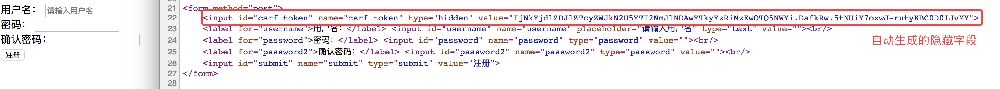

1. CSRF
CSRF全拼为Cross Site Request Forgery，译为跨站请求伪造。CSRF指攻击者盗用了你的身份，以你的名义发送恶意请求。- 包括：以你名义发送邮件，发消息，盗取你的账号，甚至于购买商品，虚拟货币转账......
- 造成的问题：个人隐私泄露以及财产安全。
1.1. CSRF攻击示意图
- 客户端访问服务器时没有同服务器做安全验证

1.2. 防止 CSRF 攻击
1.2.1. 步骤
- 在客户端向后端请求界面数据的时候，后端会往响应中的 cookie 中设置 csrf_token 的值
- 在 Form 表单中添加一个隐藏的的字段，值也是 csrf_token
- 在用户点击提交的时候，会带上这两个值向后台发起请求
- 后端接受到请求，以会以下几件事件：
- 从 cookie中取出 csrf_token
- 从 表单数据中取出来隐藏的 csrf_token 的值
- 进行对比
- 如果比较之后两值一样，那么代表是正常的请求，如果没取到或者比较不一样，代表不是正常的请求，不执行下一步操作
1.2.2. 代码演示
未进行 csrf 校验的 WebA
- 后端代码实现
from flask import Flask, render_template, make_response
from flask import redirect
from flask import request
from flask import url_for
app = Flask(__name__)
@app.route('/', methods=["POST", "GET"])
def index():
if request.method == "POST":
# 取到表单中提交上来的参数
username = request.form.get("username")
password = request.form.get("password")
if not all([username, password]):
print('参数错误')
else:
print(username, password)
if username == 'laowang' and password == '1234':
# 状态保持，设置用户名到cookie中表示登录成功
response = redirect(url_for('transfer'))
response.set_cookie('username', username)
return response
else:
print('密码错误')
return render_template('temp_login.html')
@app.route('/transfer', methods=["POST", "GET"])
def transfer():
# 从cookie中取到用户名
username = request.cookies.get('username', None)
# 如果没有取到，代表没有登录
if not username:
return redirect(url_for('index'))
if request.method == "POST":
to_account = request.form.get("to_account")
money = request.form.get("money")
print('假装执行转操作，将当前登录用户的钱转账到指定账户')
return '转账 %s 元到 %s 成功' % (money, to_account)
# 渲染转换页面
response = make_response(render_template('temp_transfer.html'))
return response
if __name__ == '__main__':
app.run(debug=True, port=9000)
- 前端登录页面代码
<!DOCTYPE html>
<html lang="en">
<head>
<meta charset="UTF-8">
<title>登录</title>
</head>
<body>
<h1>我是网站A，登录页面</h1>
<form method="post">
<label>用户名：</label><input type="text" name="username" placeholder="请输入用户名"><br/>
<label>密码：</label><input type="password" name="password" placeholder="请输入密码"><br/>
<input type="submit" value="登录">
</form>
</body>
</html>
- 前端转账页面代码
<!DOCTYPE html>
<html lang="en">
<head>
<meta charset="UTF-8">
<title>转账</title>
</head>
<body>
<h1>我是网站A，转账页面</h1>
<form method="post">
<label>账户：</label><input type="text" name="to_account" placeholder="请输入要转账的账户"><br/>
<label>金额：</label><input type="number" name="money" placeholder="请输入转账金额"><br/>
<input type="submit" value="转账">
</form>
</body>
</html>
运行测试，如果在未登录的情况下，不能直接进入转账页面，测试转账是成功的
攻击网站B的代码
- 后端代码实现
from flask import Flask
from flask import render_template
app = Flask(__name__)
@app.route('/')
def index():
return render_template('temp_index.html')
if __name__ == '__main__':
app.run(debug=True, port=8000)
- 前端代码实现
<!DOCTYPE html>
<html lang="en">
<head>
<meta charset="UTF-8">
<title>Title</title>
</head>
<body>
<h1>我是网站B</h1>
<form method="post" action="http://127.0.0.1:9000/transfer">
<input type="hidden" name="to_account" value="999999">
<input type="hidden" name="money" value="190000" hidden>
<input type="submit" value="点击领取优惠券">
</form>
</body>
</html>
运行测试，在用户登录网站A的情况下，点击网站B的按钮，可以实现伪造访问
在网站A中模拟实现 csrf_token 校验的流程
- 添加生成 csrf_token 的函数
# 生成 csrf_token 函数
def generate_csrf():
return bytes.decode(base64.b64encode(os.urandom(48)))
- 在渲染转账页面的，做以下几件事情：
- 生成 csrf_token 的值
- 在返回转账页面的响应里面设置 csrf_token 到 cookie 中
- 将 csrf_token 保存到表单的隐藏字段中
@app.route('/transfer', methods=["POST", "GET"])
def transfer():
...
# 生成 csrf_token 的值
csrf_token = generate_csrf()
# 渲染转换页面，传入 csrf_token 到模板中
response = make_response(render_template('temp_transfer.html', csrf_token=csrf_token))
# 设置csrf_token到cookie中，用于提交校验
response.set_cookie('csrf_token', csrf_token)
return response
- 在转账模板表单中添加 csrf_token 隐藏字段
<form method="post">
<input type="hidden" name="csrf_token" value="{{ csrf_token }}">
<label>账户：</label><input type="text" name="to_account" placeholder="请输入要转账的账户"><br/>
<label>金额：</label><input type="number" name="money" placeholder="请输入转账金额"><br/>
<input type="submit" value="转账">
</form>
- 运行测试，进入到转账页面之后，查看 cookie 和 html 源代码

- 在执行转账逻辑之前进行 csrf_token 的校验
if request.method == "POST":
to_account = request.form.get("to_account")
money = request.form.get("money")
# 取出表单中的 csrf_token
form_csrf_token = request.form.get("csrf_token")
# 取出 cookie 中的 csrf_token
cookie_csrf_token = request.cookies.get("csrf_token")
# 进行对比
if cookie_csrf_token != form_csrf_token:
return 'token校验失败，可能是非法操作'
print('假装执行转操作，将当前登录用户的钱转账到指定账户')
return '转账 %s 元到 %s 成功' % (money, to_account)
运行测试，用户直接在网站 A 操作没有问题，再去网站B进行操作，发现转账不成功，因为网站 B 获取不到表单中的 csrf_token 的隐藏字段，而且浏览器有 同 源策略，网站B是获取不到网站A的 cookie 的，所以就解决了 跨 站请求伪造的问题
1.3. 在 Flask 项目中解决 CSRF 攻击
在 Flask 中， Flask-wtf 扩展有一套完善的 csrf 防护体系，对于我们开发者来说，使用起来非常简单
1.3.1. 在 FlaskForm 中实现校验
- 设置应用程序的 secret_key
- 用于加密生成的 csrf_token 的值
app.secret_key = "#此处可以写随机字符串#"
- 在模板的表单中添加以下代码
<form method="post">
{{ form.csrf_token() }}
{{ form.username.label }} {{ form.username }}<br/>
{{ form.password.label }} {{ form.password }}<br/>
{{ form.password2.label }} {{ form.password2 }}<br/>
{{ form.submit }}
</form>
- 渲染出来的前端页面为：

设置完毕，cookie 中的 csrf_token 不需要我们关心，会自动帮我们设置
1.3.2. 单独使用
- 设置应用程序的 secret_key
- 用于加密生成的 csrf_token 的值
app.secret_key = "#此处可以写随机字符串#"
- 导入 flask_wtf.csrf 中的 CSRFProtect 类，进行初始化，并在初始化的时候关联 app
from flask.ext.wtf import CSRFProtect
CSRFProtect(app)
- 如果模板中有表单，不需要做任何事。与之前一样:
<form method="post">
{{ form.csrf_token }}
...
</form>
- 但如果模板中没有表单，你仍需要 CSRF 令牌:
<form method="post" action="/">
<input type="hidden" name="csrf_token" value="{{ csrf_token() }}" />
</form>
后续项目中会使用到此功能